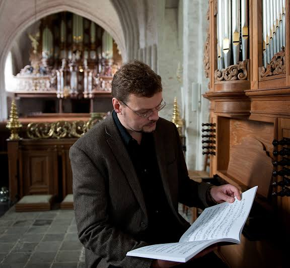
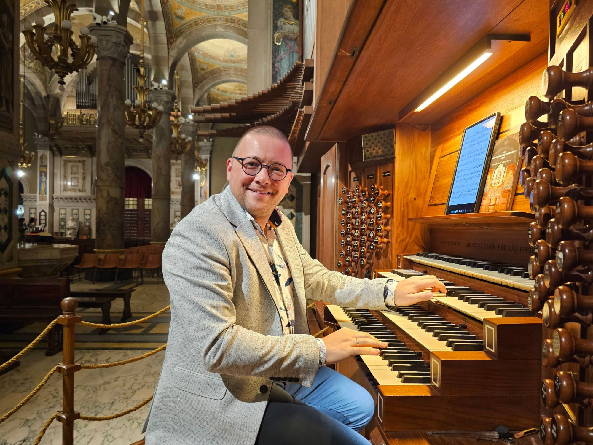
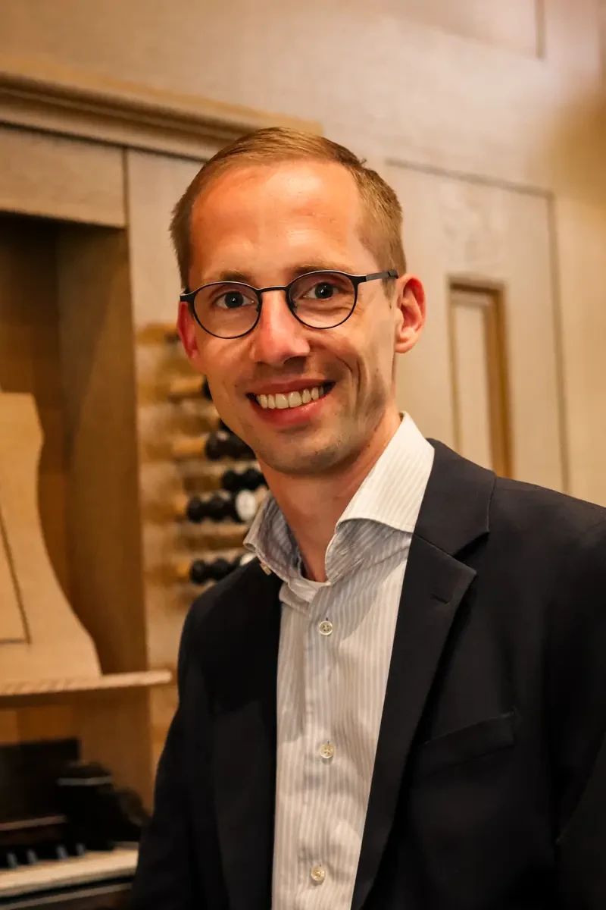

Zaterdag 29 mei 2027 — Schiedam
Een dag vol orgelmuziek, lezingen, stands en ontmoeting in een van de mooiste kerken van de regio.
Met Sietze de Vries, Minne Veldman en Gert van Hoef
Wat je te wachten staat
OrgelEvent brengt op 29 mei 2027 iedereen samen die van het orgel houdt — of er nieuwsgierig naar is. Luister naar drie gerenommeerde organisten, verken stands van orgelhuizen en uitgevers, woon een lezing bij en ontmoet andere liefhebbers in de historische Grote of Sint-Janskerk in Schiedam.
Dagoverzicht
Van ochtend tot avond — lezingen, optredens, vakstands en ontmoetingen in de Grote of Sint-Janskerk.
Verken de stands van orgelhuizen, uitgevers en vakspecialisten. Raak in gesprek, luister naar mini-concerten en bekijk de nieuwste instrumenten en bladmuziek.
Internationaal gerenommeerd organist en improvisator. Sietze neemt je mee in de wereld van het orgel — muzikaal en verhalend, toegankelijk voor iedereen.
Een exclusieve eerste blik op Minne Veldmans aankomende koraalboek. Speciaal voor dit evenement — de bladmuziek is daarna beschikbaar via KoraalBoek.nl.
Een feestelijk slotconcert in de Grote of Sint-Janskerk. Gert van Hoef sluit de dag af met een optreden dat de ruimte van het kerkgebouw ten volle benut. Aparte tickets beschikbaar.
Het definitieve tijdschema per onderdeel volgt. Houd de website in de gaten voor updates.
De musici
Elk met een eigen optreden, elk met een eigen verhaal. Ontmoet de musici en beleef hun muziek van dichtbij.

Internationaal organist en improvisator. Bekend om zijn meeslepende optredens in binnen- en buitenland, waarbij vakmanschap en persoonlijkheid samenkomen. Sietze verzorgt een lezing en concert speciaal voor OrgelEvent.

Componist en organist. Minne presenteert een exclusieve preview van zijn nieuwe koraalboek — speciaal voor OrgelEvent. De bladmuziek is daarna beschikbaar via KoraalBoek.nl.

Veelgevraagd organist en concertgever. Gert sluit de dag feestelijk af met een slotconcert in de Grote of Sint-Janskerk om 19:00 uur. Aparte tickets beschikbaar.
De vakwereld aanwezig
Orgelhuizen, uitgevers, verenigingen en vakspecialisten zijn de hele dag aanwezig met stands, instrumenten en informatie. Neem de tijd om te ontdekken, praten en luisteren.
Praktische informatie
Korte Nieuwstraat 51
3111 XE Schiedam
Goed bereikbaar met het openbaar vervoer. Parkeergarages aanwezig in de directe omgeving van het historisch centrum.
Routebeschrijving op Google Maps →Tickets
Betaling via iDEAL, creditcard en meer. Je ontvangt direct een bevestiging per e-mail. Organisatie: KoraalBoek.nl.